反向传播学习算法用于从一组给定的样本值中训练一个多层感知器 ANN。简而言之，该算法首先计算一组给定的输入值的输出值，并计算人工神经网络输出的误差量。通过将 ANN 的预测输出值与来自提供给 ANN 的训练数据的给定输入值的预期输出值进行比较，来确定 ANN 中的误差量。然后，计算出的误差用于修改人工神经网络的权重。因此，在用合理数量的样本训练 ANN 之后，ANN 将能够预测一组输入值的输出值。该算法包括三个不同的阶段。它们如下:
ANN 中突触的权重首先被初始化为范围 和
和 内的随机值。我们将权重初始化为该范围内的值，以避免权重矩阵中的对称性。这种对称的避免被称为对称破坏， ，它的执行使得反向传播算法的每次迭代在人工神经网络中的突触权重中产生显著的变化。这在人工神经网络中是可取的，因为它的每个节点应该独立于人工神经网络中的其他节点进行学习。如果所有节点都具有相同的权重，估计的学习模型将会过拟合或欠拟合。
内的随机值。我们将权重初始化为该范围内的值，以避免权重矩阵中的对称性。这种对称的避免被称为对称破坏， ，它的执行使得反向传播算法的每次迭代在人工神经网络中的突触权重中产生显著的变化。这在人工神经网络中是可取的，因为它的每个节点应该独立于人工神经网络中的其他节点进行学习。如果所有节点都具有相同的权重，估计的学习模型将会过拟合或欠拟合。
此外，反向传播学习算法需要两个附加参数，即学习速率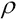和学习动量 。我们将在本节后面的示例中看到这些参数的效果。
。我们将在本节后面的示例中看到这些参数的效果。
该算法的前向传播阶段简单地计算人工神经网络各层中所有节点的激活值。如前所述，输入层中节点的激活值是人工神经网络的输入值和偏差输入。这可以通过下式正式定义:
使用来自 ANN 输入层的这些激活值，确定 ANN 其它层中节点的激活。这是通过将激活函数应用于给定层的权重矩阵和 ANN 中前一层的激活值的乘积来实现的。这可以正式表示如下:
前面的等式解释了层 l 的激活值等于应用于前一层的输出(或激活)值和给定层的权重矩阵的激活函数。接下来，输出层的激活值被反向传播。这样，我们的意思是激活值从输出层通过隐藏层遍历到人工神经网络的输入层。在此阶段，我们确定人工神经网络中每个节点的误差量或增量。通过计算预期输出值 和输出层激活值
和输出层激活值 之间的差值，确定输出层的增量值。这种差异计算可以用下面的等式来总结:
之间的差值，确定输出层的增量值。这种差异计算可以用下面的等式来总结:
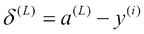
层 l 的术语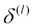是大小为 的矩阵，其中 j 是层 l 中的节点数。该术语可以正式定义如下:
的矩阵，其中 j 是层 l 中的节点数。该术语可以正式定义如下:
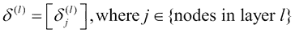
除了 ANN 的输出层之外的层的增量项由以下等式确定:
在前面的等式中，二元运算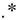用于表示两个大小相等的矩阵的逐元素乘法。请注意，该操作不同于矩阵乘法，按元素的乘法将返回由两个大小相等的矩阵中位置相同的元素的乘积组成的矩阵。术语 代表人工神经网络中使用的激活函数的导数。当我们使用 sigmoid 函数作为激活函数时，术语
代表人工神经网络中使用的激活函数的导数。当我们使用 sigmoid 函数作为激活函数时，术语 的值为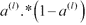。
的值为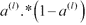。
因此，我们可以计算神经网络中所有节点的 delta 值。我们可以使用这些δ值来确定人工神经网络突触的梯度。我们现在进入反向传播算法的最终权重更新阶段。
各种突触的梯度首先被初始化为所有元素都为 0 的矩阵。给定突触的梯度矩阵的大小与突触的权重矩阵的大小相同。梯度项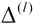表示神经网络中紧接在层 l 之后的突触层的梯度。ANN 中突触梯度的初始化正式表示如下:
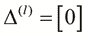
对于训练数据中的每个样本值，我们计算神经网络中所有节点的增量和激活值。使用以下等式将这些值添加到突触的梯度中:
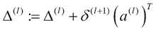
然后，我们计算所有样本值的梯度平均值，并使用给定层的增量和梯度值来更新权重矩阵，如下所示:
因此，算法的学习速率和学习动量参数仅在权重更新阶段起作用。前面的三个方程代表反向传播算法的一次迭代。必须进行大量的迭代，直到 ANN 中的总误差收敛到一个小值。我们现在可以使用以下步骤总结反向传播学习算法:
- 将人工神经网络突触的权重初始化为随机值。
- 选择一个样本值，并通过人工神经网络的几个层向前传播该样本值，以生成人工神经网络中每个节点的激活。
- 将人工神经网络最后一层产生的激活通过隐藏层反向传播到人工神经网络的输入层。通过这一步，我们计算神经网络中每个节点的误差或增量。
- 计算步骤 3 产生的误差与神经网络中所有节点的突触权重或输入激活的乘积。这一步产生网络中每个节点的权重梯度。每个梯度由一个比率或百分比表示。
- 使用人工神经网络中给定层的梯度和增量，计算人工神经网络中突触层的权重变化。然后从人工神经网络中突触的权重中减去这些变化。这实质上是反向传播算法的权重更新步骤。
- 对训练数据中的其余样本重复步骤 2 至 5。
反向传播学习算法中有几个不同的部分，我们现在将实现每个部分并将其组合成一个完整的实现。由于神经网络中突触和激活的增量和权重可以用矩阵表示，我们可以编写该算法的矢量化实现。
注意
注意，对于下面的例子，我们需要来自 Incanter 库中的名称空间incanter.core的函数。这个名称空间中的函数实际上使用 Clatrix 库来表示矩阵及其操作。
让我们假设我们需要实现一个 ANN 来模拟一个逻辑 XOR 门。样本数据只是 XOR 门的真值表，可以表示为向量，如下所示:
;; truth table for XOR logic gate
(def sample-data [[[0 0] [0]]
[[0 1] [1]]
[[1 0] [1]]
[[1 1] [0]]])在前面的向量sample-data中定义的每个元素本身是一个向量，包括用于 XOR 门的输入和输出值的其他向量。我们将使用这个向量作为构建人工神经网络的训练数据。这本质上是一个分类问题，我们会用 ann 来建模。抽象地说，人工神经网络应该能够执行二元和多元分类。我们可以将人工神经网络的协议定义如下:
(defprotocol NeuralNetwork
(run [network inputs])
(run-binary [network inputs])
(train-ann [network samples]))
前面代码中定义的NeuralNetwork协议有三个功能。train-ann函数可用于训练人工神经网络，需要一些样本数据。可以在这个人工神经网络上使用run和run-binary函数来分别执行多类和二元分类。run和run-binary功能都需要一组输入值。
反向传播算法的第一步是初始化人工神经网络突触的权重。我们可以使用rand和matrix函数将这些权重生成一个矩阵，如下所示:
(defn rand-list
"Create a list of random doubles between
-epsilon and +epsilon."
[len epsilon]
(map (fn [x] (- (rand (* 2 epsilon)) epsilon))
(range 0 len)))
(defn random-initial-weights
"Generate random initial weight matrices for given layers.
layers must be a vector of the sizes of the layers."
[layers epsilon]
(for [i (range 0 (dec (length layers)))]
(let [cols (inc (get layers i))
rows (get layers (inc i))]
(matrix (rand-list (* rows cols) epsilon) cols))))前面代码中的rand-list函数在epsilon的正负范围内创建一个随机元素列表。如前所述，我们选择这个范围来打破权重矩阵的对称性。
random-initial-weights函数为人工神经网络的不同层生成几个权重矩阵。如前面代码中所定义的，layers参数必须是 ANN 各层大小的向量。对于输入层有两个节点、隐藏层有三个节点、输出层有一个节点的 ANN，我们将layers作为[2 3 1]传递给random-initial-weights函数。每个权重矩阵的列数等于输入数，行数等于 ANN 下一层的节点数。我们将给定层的权重矩阵中的列数设置为输入数，加上神经层偏差的额外输入。注意，我们使用了稍微不同形式的matrix函数。这种形式接受一个向量，并将这个向量分割成一个矩阵，这个矩阵有许多列，这些列由这个函数的第二个参数指定。因此，传递给这种形式的matrix函数的向量必须有(* rows cols)元素，其中rows和cols分别是权重矩阵中的行数和列数。
由于我们需要将 sigmoid 函数应用于人工神经网络中某层的所有激活，我们必须定义一个函数，将 sigmoid 函数应用于给定矩阵中的所有元素。我们可以使用incanter.core名称空间中的div、plus、exp和minus函数来实现这样一个函数，如下面的代码所示:
(defn sigmoid
"Apply the sigmoid function 1/(1+exp(-z)) to all
elements in the matrix z."
[z]
(div 1 (plus 1 (exp (minus z)))))
注意
请注意，前面定义的所有函数都对给定矩阵中的所有元素应用相应的算术运算，并返回一个新矩阵。
我们还需要在人工神经网络的每一层添加一个偏置节点。这可以通过包装bind-rows函数来完成，它将一行元素添加到一个矩阵中，如下面的代码所示:
(defn bind-bias
"Add the bias input to a vector of inputs."
[v]
(bind-rows [1] v))
因为偏移值总是 1，所以我们将元素行指定为[1]到bind-rows函数。
使用前面定义的函数，我们可以实现前向传播。实际上，我们必须将人工神经网络中两层之间给定突触的权重相乘，然后对每个生成的激活值应用 sigmoid 函数，如以下代码所示:
(defn matrix-mult
"Multiply two matrices and ensure the result is also a matrix."
[a b]
(let [result (mmult a b)]
(if (matrix? result)
result
(matrix [result]))))
(defn forward-propagate-layer
"Calculate activations for layer l+1 given weight matrix
of the synapse between layer l and l+1 and layer l activations."
[weights activations]
(sigmoid (matrix-mult weights activations)))
(defn forward-propagate
"Propagate activation values through a network's
weight matrix and return output layer activation values."
[weights input-activations]
(reduce #(forward-propagate-layer %2 (bind-bias %1))
input-activations weights))在前面的代码中，我们首先定义了一个matrix-mult函数，它执行矩阵乘法，并确保结果是一个矩阵。注意，为了定义matrix-mult，我们使用了mmult函数，而不是将两个相同大小的矩阵中的相应元素相乘的mult函数。
使用matrix-mult和sigmoid函数，我们可以在人工神经网络的两层之间实现前向传播步骤。这是在forward-propagate-layer函数中完成的，函数只是将代表 ANN 中两层之间突触权重的矩阵与输入激活值相乘，同时确保返回的值始终是一个矩阵。要将一组给定的值传播到人工神经网络的所有层，我们必须添加一个偏差输入，并对每一层应用forward-propagate-layer函数。这可以通过在forward-propagate-layer函数的闭包上使用reduce函数来简洁地完成，如前面代码中定义的forward-propagate函数所示。
虽然forward-propagate函数可以确定人工神经网络的输出激活，但我们实际上需要人工神经网络中所有节点的激活来使用反向传播。我们可以通过将reduce函数转换为递归函数并引入一个累加器变量来存储人工神经网络中每一层的激活来做到这一点。下面代码中定义的forward-propagate-all-activations函数实现了这一思想，并使用loop形式递归应用forward-propagate-layer函数:
(defn forward-propagate-all-activations
"Propagate activation values through the network
and return all activation values for all nodes."
[weights input-activations]
(loop [all-weights weights
activations (bind-bias input-activations)
all-activations [activations]]
(let [[weights
& all-weights'] all-weights
last-iter? (empty? all-weights')
out-activations (forward-propagate-layer
weights activations)
activations' (if last-iter? out-activations
(bind-bias out-activations))
all-activations' (conj all-activations activations')]
(if last-iter? all-activations'
(recur all-weights' activations' all-activations')))))前面代码中定义的forward-propagate-all-activations函数要求 ANN 中所有节点的权重和输入值作为激活值通过 ANN。我们首先使用bind-bias功能将偏置输入添加到人工神经网络的输入激活中。然后，我们将这个值存储在一个累加器中，即变量all-activations，作为 ANN 中所有激活的向量。然后将forward-propagate-layer函数应用于 ANN 各层的权重矩阵，并且每次迭代将偏置输入添加到 ANN 中相应层的输入激活中。
注意
注意，我们没有在最后一次迭代中添加偏差输入，因为它计算 ANN 的输出层。因此，forward-propagate-all-activations函数通过人工神经网络应用输入值的前向传播，并返回人工神经网络中每个节点的激活。注意，这个向量中的激活值是按照人工神经网络的层的顺序排列的。
我们现在将实现反向传播学习算法的反向传播阶段。首先，我们必须实现一个函数，根据公式 计算误差项。我们将借助以下代码来实现这一点:
计算误差项。我们将借助以下代码来实现这一点:
(defn back-propagate-layer
"Back propagate deltas (from layer l+1) and
return layer l deltas."
[deltas weights layer-activations]
(mult (matrix-mult (trans weights) deltas)
(mult layer-activations (minus 1 layer-activations))))前面代码中定义的back-propagate-layer函数根据层的权重和人工神经网络中下一层的差值，计算人工神经网络中突触层 l 的误差或差值。
注意
请注意，我们仅使用矩阵乘法通过matrix-mult函数计算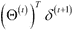项。所有其他乘法操作都是矩阵的元素乘法，使用mult函数完成。
本质上，我们必须通过人工神经网络的各种隐藏层将该函数从输出层应用到输入层，以产生人工神经网络中每个节点的增量值。然后，可以将这些增量值添加到节点的激活中，从而产生梯度值，我们必须通过该梯度值来调整人工神经网络中节点的权重。我们可以用类似于forward-propagate-all-activations函数的方式来实现，也就是说，通过递归地将back-propagate-layer函数应用于人工神经网络的各个层。当然，我们必须以相反的顺序遍历 ANN 的各个层，即从输出层开始，通过隐藏层，到输入层。我们将借助以下代码来实现这一点:
(defn calc-deltas
"Calculate hidden deltas for back propagation.
Returns all deltas including output-deltas."
[weights activations output-deltas]
(let [hidden-weights (reverse (rest weights))
hidden-activations (rest (reverse (rest activations)))]
(loop [deltas output-deltas
all-weights hidden-weights
all-activations hidden-activations
all-deltas (list output-deltas)]
(if (empty? all-weights) all-deltas
(let [[weights
& all-weights'] all-weights
[activations
& all-activations'] all-activations
deltas' (back-propagate-layer
deltas weights activations)
all-deltas' (cons (rest deltas')
all-deltas)]
(recur deltas' all-weights'
all-activations' all-deltas'))))))calc-deltas函数决定了人工神经网络中所有感知器节点的增量值。对于这个计算，不需要输入和输出激活。计算增量值只需要绑定到hidden-activations变量的隐藏激活。此外，输入层的权重被跳过，因为它们被绑定到hidden-weights变量。calc-deltas函数然后将back-propagate-layer函数应用于 ANN 中每个突触层的所有权重矩阵，从而确定矩阵中所有节点的增量。请注意，我们没有将偏差节点的增量添加到一组计算的增量中。这是使用rest函数、(rest deltas')对给定突触层的计算增量完成的，因为第一个增量是给定层中的偏置输入的增量。
根据定义，给定突触层的梯度向量项通过将矩阵 和
和 相乘来确定，矩阵和分别表示下一层的增量和给定层的激活。我们将借助以下代码来实现这一点:
相乘来确定，矩阵和分别表示下一层的增量和给定层的激活。我们将借助以下代码来实现这一点:
(defn calc-gradients
"Calculate gradients from deltas and activations."
[deltas activations]
(map #(mmult %1 (trans %2)) deltas activations))
前面代码中显示的calc-gradients函数是术语 的简明实现。由于我们将处理一系列增量和激活项，我们使用
的简明实现。由于我们将处理一系列增量和激活项，我们使用map函数将前面的等式应用于 ANN 中相应的增量和激活。使用calc-deltas和calc-gradient函数，我们可以确定给定训练样本的人工神经网络中所有节点权重的总误差。我们将借助以下代码来实现这一点:
(defn calc-error
"Calculate deltas and squared error for given weights."
[weights [input expected-output]]
(let [activations (forward-propagate-all-activations
weights (matrix input))
output (last activations)
output-deltas (minus output expected-output)
all-deltas (calc-deltas
weights activations output-deltas)
gradients (calc-gradients all-deltas activations)]
(list gradients
(sum (pow output-deltas 2)))))前面代码中定义的calc-error函数需要两个参数——人工神经网络中突触层的权重矩阵和一个样本训练值，如[input expected-output]所示。首先使用forward-propagate-all-activations函数计算人工神经网络中所有节点的激活，最后一层的 delta 值计算为人工神经网络产生的预期输出值和实际输出值之差。人工神经网络计算的输出值就是人工神经网络产生的最后一个激活值，如前面代码中的(last activations)所示。使用计算的激活，通过calc-deltas功能确定所有感知器节点的增量。使用calc-gradients函数，这些增量值依次用于确定人工神经网络各层的权重梯度。对于给定的样本值，人工神经网络的均方误差 ( MSE ) 也通过将人工神经网络输出层的增量值的平方相加来计算。
对于人工神经网络中某一层的给定权重矩阵，我们必须将该层的梯度初始化为与权重矩阵具有相同维数的矩阵，并且梯度矩阵中的所有元素必须设置为0。这可以通过组合使用dim函数和matrix函数来实现，函数以向量的形式返回矩阵的大小，函数的变体形式如下面的代码所示:
(defn new-gradient-matrix
"Create accumulator matrix of gradients with the
same structure as the given weight matrix
with all elements set to 0."
[weight-matrix]
(let [[rows cols] (dim weight-matrix)]
(matrix 0 rows cols)))在前面代码中定义的new-gradient-matrix函数中，matrix函数需要一个值、行数和列数来初始化一个矩阵。该函数产生一个初始化的梯度矩阵，其结构与提供的权重矩阵相同。
我们现在实现calc-gradients-and-error函数来对一组权重矩阵和样本值应用calc-error函数。我们必须对每个样本应用calc-error函数，并累加梯度和 MSE 值的总和。然后，我们计算这些累积值的平均值，以返回给定样本值和权重矩阵的梯度矩阵和总 MSE。我们将借助以下代码来实现这一点:
(defn calc-gradients-and-error' [weights samples]
(loop [gradients (map new-gradient-matrix weights)
total-error 1
samples samples]
(let [[sample
& samples'] samples
[new-gradients
squared-error] (calc-error weights sample)
gradients' (map plus new-gradients gradients)
total-error' (+ total-error squared-error)]
(if (empty? samples')
(list gradients' total-error')
(recur gradients' total-error' samples')))))
(defn calc-gradients-and-error
"Calculate gradients and MSE for sample
set and weight matrix."
[weights samples]
(let [num-samples (length samples)
[gradients
total-error] (calc-gradients-and-error'
weights samples)]
(list
(map #(div % num-samples) gradients) ; gradients
(/ total-error num-samples)))) ; MSE前面代码中定义的calc-gradients-and-error函数依赖于calc-gradients-and-error'辅助函数。The calc-gradients-and-error'函数初始化梯度矩阵，执行calc-error函数的应用，并累加计算的梯度值和 MSE。calc-gradients-and-error函数简单地计算从calc-gradients-and-error'函数返回的累积梯度矩阵和 MSE 的平均值。
现在，在我们的实现中唯一缺少的部分是使用计算的梯度修改人工神经网络中节点的权重。简而言之，我们必须反复更新权重，直到观察到 MSE 收敛。这实际上是一种应用于人工神经网络节点的梯度下降形式。我们现在将实现梯度下降的这种变体，以便通过重复修改 ANN 中节点的权重来训练 ANN，如下面的代码所示:
(defn gradient-descent-complete?
"Returns true if gradient descent is complete."
[network iter mse]
(let [options (:options network)]
(or (>= iter (:max-iters options))
(< mse (:desired-error options)))))前面代码中定义的gradient-descent-complete?函数只是检查梯度下降的终止条件。该函数假设表示为网络的 ANN 是包含:options关键字的映射或记录。这个键的值又是包含 ANN 的各种配置选项的另一个映射。gradient-descent-complete?功能检查人工神经网络的总均方误差是否小于由:desired-error选项指定的期望均方误差。此外，我们添加了另一个条件来检查执行的迭代次数是否超过了由:max-iters选项指定的最大迭代次数。
现在，我们将为多层感知器神经网络实现一个gradient-descent函数。在该实现中，权重的变化由梯度下降算法提供的step函数来计算。然后，这些计算出的变化被简单地添加到人工神经网络突触层的现有权重中。我们将借助以下代码实现多层感知器神经网络的gradient-descent功能:
(defn apply-weight-changes
"Applies changes to corresponding weights."
[weights changes]
(map plus weights changes))
(defn gradient-descent
"Perform gradient descent to adjust network weights."
[step-fn init-state network samples]
(loop [network network
state init-state
iter 0]
(let [iter (inc iter)
weights (:weights network)
[gradients
mse] (calc-gradients-and-error weights samples)]
(if (gradient-descent-complete? network iter mse)
network
(let [[changes state] (step-fn network gradients state)
new-weights (apply-weight-changes
weights changes)
network (assoc network
:weights new-weights)]
(recur network state iter))))))前面代码中定义的apply-weight-changes函数简单地将权重和人工神经网络权重的计算变化相加。gradient-descent函数需要一个step函数(指定为step-fn)、人工神经网络的初始状态、人工神经网络本身以及训练人工神经网络的样本数据。该函数必须根据人工神经网络、初始梯度矩阵和人工神经网络的初始状态计算权重变化。step-fn函数也返回人工神经网络改变后的状态。然后使用apply-weight-changes函数更新 ANN 的权重，并且重复执行该迭代，直到gradient-descent-complete?函数返回true。ANN 的权重由network图中的:weights关键字指定。然后通过简单地覆盖由关键字:weights指定的network上的值来更新这些权重。
在反向传播算法的背景下，我们需要指定人工神经网络必须训练的学习速率和学习动量。需要这些参数来确定 ANN 中节点权重的变化。然后，必须将实现该计算的函数指定为gradient-descent函数的step-fn参数，如以下代码所示:
(defn calc-weight-changes
"Calculate weight changes:
changes = learning rate * gradients +
learning momentum * deltas."
[gradients deltas learning-rate learning-momentum]
(map #(plus (mult learning-rate %1)
(mult learning-momentum %2))
gradients deltas))
(defn bprop-step-fn [network gradients deltas]
(let [options (:options network)
learning-rate (:learning-rate options)
learning-momentum (:learning-momentum options)
changes (calc-weight-changes
gradients deltas
learning-rate learning-momentum)]
[(map minus changes) changes]))
(defn gradient-descent-bprop [network samples]
(let [gradients (map new-gradient-matrix (:weights network))]
(gradient-descent bprop-step-fn gradients
network samples)))前面代码中定义的calc-weight-changes函数根据人工神经网络中给定层的梯度值和增量计算权重的变化，称为 。
。bprop-step-fn函数从由network表示的 ANN 中提取学习速率和学习动量参数，并使用calc-weight-changes函数。由于权重将通过gradient-descent函数与变化相加，我们使用minus函数将权重的变化作为负值返回。
gradient-descent-bprop函数简单地初始化给定 ANN 权重的梯度矩阵，并通过指定bprop-step-fn为要使用的step函数来调用gradient-descent函数。使用gradient-descent-bprop函数，我们可以实现之前定义的抽象NeuralNetwork协议，如下所示:
(defn round-output
"Round outputs to nearest integer."
[output]
(mapv #(Math/round ^Double %) output))
(defrecord MultiLayerPerceptron [options]
NeuralNetwork
;; Calculates the output values for the given inputs.
(run [network inputs]
(let [weights (:weights network)
input-activations (matrix inputs)]
(forward-propagate weights input-activations)))
;; Rounds the output values to binary values for
;; the given inputs.
(run-binary [network inputs]
(round-output (run network inputs)))
;; Trains a multilayer perceptron ANN from sample data.
(train-ann [network samples]
(let [options (:options network)
hidden-neurons (:hidden-neurons options)
epsilon (:weight-epsilon options)
[first-in
first-out] (first samples)
num-inputs (length first-in)
num-outputs (length first-out)
sample-matrix (map #(list (matrix (first %))
(matrix (second %)))
samples)
layer-sizes (conj (vec (cons num-inputs
hidden-neurons))
num-outputs)
new-weights (random-initial-weights
layer-sizes epsilon)
network (assoc network :weights new-weights)]
(gradient-descent-bprop network sample-matrix))))前面代码中定义的记录使用gradient-descent-bprop函数训练多层感知器 ANN。train-ann函数首先从指定给 ANN 的选项映射中提取隐藏神经元的数量和常数的值。 ANN 中各种突触层的大小首先从样本数据中确定，并绑定到layer-sizes变量。然后使用random-initial-weights函数初始化人工神经网络的权重，并使用assoc函数在记录network中更新。最后，调用gradient-descent-bprop函数使用反向传播学习算法训练 ANN。
由MultiLayerPerceptron记录定义的 ANN 还实现了来自NeuralNetwork协议的另外两个功能run和run-binary。run功能使用forward-propagate功能来确定训练过的MultiLayerPerceptron人工神经网络的输出值。对于给定的一组输入值， run-binary函数只是对run函数返回的输出值进行舍入。
使用MultiLayerPerceptron记录创建的 ANN 需要一个单独的options参数，其中包含我们可以为 ANN 指定的各种选项。我们可以为这种人工神经网络定义如下默认选项:
(def default-options
{:max-iters 100
:desired-error 0.20
:hidden-neurons [3]
:learning-rate 0.3
:learning-momentum 0.01
:weight-epsilon 50})
(defn train [samples]
(let [network (MultiLayerPerceptron. default-options)]
(train-ann network samples)))由default-options变量定义的映射包含以下键，这些键指定了MultiLayerPerceptron ANN 的选项:
:max-iter:该键指定运行gradient-descent功能的最大迭代次数。:desired-error:该变量指定人工神经网络中预期的或可接受的 MSE。:hidden-neurons:该变量指定网络中隐藏神经节点的数量。值[3]表示具有三个神经元的单个隐藏层。:learning-rate 和:learning-momentum:这些键指定反向传播学习算法的权重更新阶段的学习速率和学习动量。:epsilon:该变量指定random-initial-weights函数用来初始化人工神经网络权重的常数。
我们还定义了一个简单的辅助函数train来创建一个MultiLayerPerceptron类型的 ANN，并使用train-ann函数和由samples参数指定的样本数据来训练 ANN。我们现在可以从由sample-data变量指定的训练数据中创建一个经过训练的人工神经网络，如下所示:
user> (def MLP (train sample-data))
#'user/MLP
然后，我们可以使用经过训练的 ANN 来预测一些输入值的输出。由MLP定义的人工神经网络产生的输出与异或门的输出非常匹配，如下所示:
user> (run-binary MLP [0 1])
[1]
user> (run-binary MLP [1 0])
[1]
然而，经过训练的人工神经网络对某些输入集产生不正确的输出，如下所示:
user> (run-binary MLP [0 0])
[0]
user> (run-binary MLP [1 1]) ;; incorrect output generated
[1]
为了提高经过训练的人工神经网络的准确性，我们可以采取几种措施。首先，我们可以使用人工神经网络的权重矩阵来正则化计算的梯度。这一修改将对前面的实现产生显著的改进。我们还可以增加要执行的最大迭代次数。我们还可以通过调整学习速率、学习动力、和人工神经网络中隐藏节点的数量来调整算法，使其性能更好。这些修改被跳过，因为它们必须由读者来完成。
Enclog 库(http://github.com/jimpil/enclog)是用于机器学习算法和人工神经网络的 Encog 库的 Clojure 包装库。Encog 库(http://github.com/encog)有两个主要实现:一个在 Java 中，一个在. NET 中。我们可以使用 Enclog 库轻松生成定制的 ann 来建模监督和非监督的机器学习问题。
注
通过向project.clj文件添加以下依赖关系，可将 Enclog 库添加到 Leiningen 项目中:
[org.encog/encog-core "3.1.0"]
[enclog "0.6.3"]
注意，Enclog 库需要 Encog Java 库作为依赖项。
对于下面的示例，命名空间声明应该类似于下面的声明:
(ns my-namespace
(:use [enclog nnets training]))
我们可以使用来自enclog.nnets名称空间的neural-pattern和network函数从 Enclog 库中创建一个 ANN。neural-pattern功能用于指定人工神经网络的神经网络模型。network函数接受从neural-pattern函数返回的神经网络模型，并创建一个新的人工神经网络。我们可以根据指定的神经网络模型向network函数提供几个选项。前馈多层感知器网络定义如下:
(def mlp (network (neural-pattern :feed-forward)
:activation :sigmoid
:input 2
:output 1
:hidden [3]))对于一个前馈神经网络，我们可以用:activation键给network函数指定激活函数。对于我们的例子，我们使用 sigmoid 函数，它被指定为:sigmoid，作为神经网络节点的激活函数。我们还使用:input、:output和:hidden键指定了人工神经网络的输入、输出和隐藏层中的节点数量。
为了用一些样本数据训练由network函数创建的 ANN，我们使用了来自enclog.training名称空间的trainer和train函数。用于训练人工神经网络的学习算法必须指定为trainer函数的第一个参数。对于反向传播算法，该参数是:back-prop关键字。训练器函数返回的值代表一个人工神经网络以及用于训练人工神经网络的学习算法。然后使用train函数在人工神经网络上实际运行指定的训练算法。我们将借助以下代码来实现这一点:
(defn train-network [network data trainer-algo]
(let [trainer (trainer trainer-algo
:network network
:training-set data)]
(train trainer 0.01 1000 []))) ;; 0.01 is the expected error前面代码中定义的train-network函数有三个参数。第一个参数是由网络函数创建的 ANN，第二个参数是用于训练 ANN 的训练数据，第三个参数指定必须训练 ANN 的学习算法。如前面的代码所示，我们可以使用关键参数:network和:training-set将 ANN 和训练数据指定给trainer函数。然后，使用样本数据，使用train函数在人工神经网络上运行训练算法。我们可以将 ANN 中的预期误差和运行训练算法的最大迭代次数指定为train函数的第一个和第二个参数。在前面的例子中，期望误差是0.01，最大迭代次数是 1000。传递给train函数的最后一个参数是一个指定 ANN 行为的向量，我们通过将它作为一个空向量传递来忽略它。
用于在人工神经网络上运行训练算法的训练数据可以使用 Enclog 的data函数创建。例如，我们可以使用data函数为逻辑异或门创建一个训练数据，如下所示:
(def dataset
(let [xor-input [[0.0 0.0] [1.0 0.0] [0.0 1.0] [1.0 1.0]]
xor-ideal [[0.0] [1.0] [1.0] [0.0]]]
(data :basic-dataset xor-input xor-ideal)))data函数要求数据类型作为函数的第一个参数，后面是训练数据的输入和输出值作为向量。对于我们的例子，我们将使用:basic-dataset和:basic 参数。:basic-dataset关键字可用于创建训练数据，而:basic 关键字可用于指定一组输入值。
使用由dataset变量和train-network函数定义的数据，我们可以训练人工神经网络的MLP来模拟异或门的输出，如下所示:
user> (def MLP (train-network mlp dataset :back-prop))
Iteration # 1 Error: 26.461526% Target-Error: 1.000000%
Iteration # 2 Error: 25.198031% Target-Error: 1.000000%
Iteration # 3 Error: 25.122343% Target-Error: 1.000000%
Iteration # 4 Error: 25.179218% Target-Error: 1.000000%
...
...
Iteration # 999 Error: 3.182540% Target-Error: 1.000000%
Iteration # 1,000 Error: 3.166906% Target-Error: 1.000000%
#'user/MLP
如前面的输出所示，经过训练的人工神经网络的误差约为 3.16%。现在，我们可以使用经过训练的人工神经网络来预测一组输入值的输出。为此，我们使用 Java 的compute和getData方法，它们分别由.compute和.getData指定。我们可以定义一个简单的助手函数来调用输入值向量的.compute方法，并将输出舍入为二进制值，如下所示:
(defn run-network [network input]
(let [input-data (data :basic input)
output (.compute network input-data)
output-vec (.getData output)]
(round-output output-vec)))我们现在可以使用run-network函数使用输入值向量来测试训练好的人工神经网络，如下所示:
user> (run-network MLP [1 1])
[0]
user> (run-network MLP [1 0])
[1]
user> (run-network MLP [0 1])
[1]
user> (run-network MLP [0 0])
[0]
如前面的代码所示，由MLP表示的经过训练的人工神经网络完全符合 XOR 门的行为。
总之，Enclog 库为我们提供了一组功能强大的函数，可用于构建人工神经网络。在前面的例子中，我们探索了前馈多层感知器模型。该库提供了其他几种 ANN 模型，如自适应共振理论 ( ART ) 、自组织映射 ( SOM )、Elman 网络等。Enclog 库还允许我们定制特定神经网络模型中节点的激活函数。对于我们示例中的前馈网络，我们使用了 sigmoid 函数。该库还支持多种数学函数，如正弦、双曲正切、对数和线性函数。Enclog 库还支持几种机器学习算法，可用于训练人工神经网络。
SOM(读作 ess-o-em )是另一个有趣的人工神经网络模型，对无监督学习很有用。SOMs】用于几个实际应用中，如手写和图像识别。当我们在第 7 章、聚类数据中讨论聚类时，我们还将再次讨论 SOMs。
在无监督学习中，样本数据不包含预期的输出值，人工神经网络必须完全依靠自己识别和匹配输入数据中的模式。som 用于竞争学习，这是一种特殊的无监督学习，其中人工神经网络输出层中的神经元相互竞争激活。被激活的神经元决定了 ANN 的最终输出值，因此，被激活的神经元也被称为 获胜神经元。
神经生物学研究表明，发送到大脑的不同感觉输入以有序的模式映射到大脑大脑皮层的相应区域。因此，处理密切相关操作的神经元紧密地聚集在一起。这被称为地形形成 的原理，事实上，som 是以这种行为为模型的。
SOM 本质上是将具有大量维度的输入数据转换成低维离散映射。通过将神经元放置在该图的节点来训练 SOM。SOM 的内部图通常有一个或两个维度。SOM 中的神经元变得选择性地调谐到输入值中的模式。当 SOM 中的特定神经元针对特定的输入模式被激活时，其相邻的神经元往往会变得更加兴奋，并且更加适应输入值中的模式。这种行为被称为一组神经元的横向相互作用 。因此，SOM 在输入数据中寻找模式。当在一组输入中发现相似的模式时，SOM 识别该模式。SOM 中的神经节点层可以如下所示:
SOM 有一个输入层和一个计算层，如上图所示。计算层也被称为 SOM 的特征图 。输入节点将输入值映射到计算层的几个神经元。计算层中的每个节点都将其输出连接到其相邻节点，并且这些连接中的每一个都具有与之相关联的权重。这些权重被称为特征图的 连接权重 。SOM 通过调整其计算层中节点的连接权重来记住输入值中的模式。
SOM 的自组织过程可以描述如下:
- 连接权重首先被初始化为随机值。
- 对于每个输入模式，计算层中的神经节点使用判别函数计算一个值。这些值然后被用来决定获胜的神经元。
- 选择具有最小判别函数值的神经元，并修改与其周围神经元的连接权重，以针对输入数据中的相似模式激活。
必须修改权重，使得对于输入中的给定模式，由相邻节点的判别函数产生的值减少。因此，对于输入数据中的类似模式，获胜节点及其周围节点产生更高的输出或激活值。调整权重的变化量取决于为训练算法指定的学习速率。
对于输入数据中给定数量的维度D，判别函数可正式定义如下:
在上式中， 项是 SOM 中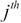神经元的权重向量。向量的长度等于连接到神经元的神经元数量。
项是 SOM 中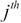神经元的权重向量。向量的长度等于连接到神经元的神经元数量。
一旦我们在 SOM 中选择了获胜的神经元，我们必须选择获胜神经元的相邻神经元。我们必须调整这些相邻神经元的权重以及获胜神经元的权重。可以使用多种方案来选择获胜神经元的相邻节点。在最简单的情况下，我们可以选择单个相邻的神经元。
我们也可以使用bubble函数或radial bias函数来选择获胜神经元周围的一组相邻神经元(更多信息，请参考多变量函数插值和自适应网络)。
为了训练一个 SOM，我们必须执行以下步骤作为训练算法的一部分:
- 将计算层中节点的权重设置为随机值。
- 从训练数据中选择一个样本输入模式。
- 为所选的一组输入模式找到获胜的神经元。
- 更新获胜神经元及其周围节点的权重。
- 对训练数据中的所有样本重复步骤 2 到 4。
Enclog 库支持 SOM 神经网络模型和训练算法。我们可以从 Enclog 库中创建并训练一个 SOM，如下所示:
(def som (network (neural-pattern :som) :input 4 :output 2))
(defn train-som [data]
(let [trainer (trainer :basic-som :network som
:training-set data
:learning-rate 0.7
:neighborhood-fn
(neighborhood-F :single))]
(train trainer Double/NEGATIVE_INFINITY 10 [])))出现在前面代码中的som变量代表一个 SOM。train-som功能可用于训练 SOM。SOM 训练算法被指定为:basic-som。注意，我们使用:learning-rate键将学习率指定为0.7。
在前面的代码中，传递给trainer函数的:neighborhood-fn键指定了我们如何为一组给定的输入值选择 SOM 中获胜节点的邻居。我们指定获胜节点的单个相邻节点必须在(neighborhood-F :single)的帮助下被选择。我们也可以指定不同的邻域函数。例如，我们可以将bubble函数指定为:bubble，或者将radial basis函数指定为:rbf。
我们可以使用train-som函数用一些输入模式来训练 SOM。注意，用于训练 SOM 的训练数据将不具有任何输出值。SOM 必须自己识别输入数据中的模式。一旦 SOM 被训练，我们就可以使用 Java classify方法来检测输入中的模式。对于以下示例，我们仅提供两种输入模式来训练 SOM:
(defn train-and-run-som []
(let [input [[-1.0, -1.0, 1.0, 1.0 ]
[1.0, 1.0, -1.0, -1.0]]
input-data (data :basic-dataset input nil) ;no ideal data
SOM (train-som input-data)
d1 (data :basic (first input))
d2 (data :basic (second input))]
(println "Pattern 1 class:" (.classify SOM d1))
(println "Pattern 2 class:" (.classify SOM d2))
SOM))我们可以运行前面代码中定义的train-and-run-som函数，并观察到 SOM 将训练数据中的两种输入模式识别为两个不同的类，如下所示:
user> (train-and-run-som)
Iteration # 1 Error: 2.137686% Target-Error: NaN
Iteration # 2 Error: 0.641306% Target-Error: NaN
Iteration # 3 Error: 0.192392% Target-Error: NaN
...
...
Iteration # 9 Error: 0.000140% Target-Error: NaN
Iteration # 10 Error: 0.000042% Target-Error: NaN
Pattern 1 class: 1
Pattern 2 class: 0
#<SOM org.encog.neural.som.SOM@19a0818>
总之，SOMs 是处理无监督学习问题的一个很好的模型。此外，我们可以使用 Enclog 库轻松构建 som 来模拟这类问题。
 。很明显，梯度下降的时间复杂度随着模型特征的数量呈几何级数增加。因此，梯度下降本身不足以有效地模拟具有大量特征的非线性回归模型。
。很明显，梯度下降的时间复杂度随着模型特征的数量呈几何级数增加。因此，梯度下降本身不足以有效地模拟具有大量特征的非线性回归模型。

 。下图显示了添加了此偏置值的神经元:
。下图显示了添加了此偏置值的神经元:
 都有一个相关的权重
都有一个相关的权重 。该权重类似于
。该权重类似于 元组表示，其中
元组表示，其中 是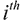训练样本的输入值。
是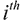训练样本的输入值。 表示。如前所述，用于产生该值的激活函数是 sigmoid 函数或双曲正切函数。当然，任何其他的
表示。如前所述，用于产生该值的激活函数是 sigmoid 函数或双曲正切函数。当然，任何其他的
 类，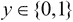。
类，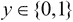。 矩阵。这可以正式表示如下:
矩阵。这可以正式表示如下:
 相关联。注意，第一个突触在输入层和隐藏层之间，第二个突触在隐藏层和输出层之间。权重矩阵的大小为
相关联。注意，第一个突触在输入层和隐藏层之间，第二个突触在隐藏层和输出层之间。权重矩阵的大小为 ，权重矩阵
，权重矩阵 。此外，术语用于表示人工神经网络中的所有权重矩阵。
。此外，术语用于表示人工神经网络中的所有权重矩阵。 表示人工神经网络的输入变量， N 是训练数据中样本值的个数。成本函数本质上是逻辑回归的函数，但此处应用于 K 输出值。我们可以将正则化参数添加到前面的成本函数中，并使用下面的等式来表达正则化的成本函数:
表示人工神经网络的输入变量， N 是训练数据中样本值的个数。成本函数本质上是逻辑回归的函数，但此处应用于 K 输出值。我们可以将正则化参数添加到前面的成本函数中，并使用下面的等式来表达正则化的成本函数:
 指的是 ANN 的层 l 中的节点数。值得注意的一点是，在前面的正则化成本函数中，只有正则化项取决于人工神经网络的层数。因此，估计模型的推广是基于 ANN 中的层数。
指的是 ANN 的层 l 中的节点数。值得注意的一点是，在前面的正则化成本函数中，只有正则化项取决于人工神经网络的层数。因此，估计模型的推广是基于 ANN 中的层数。


 和
和 。存储在这些上下文节点中的值随后被 ANN 的隐藏层中的节点用来回忆先前的激活以确定新的激活值。
。存储在这些上下文节点中的值随后被 ANN 的隐藏层中的节点用来回忆先前的激活以确定新的激活值。